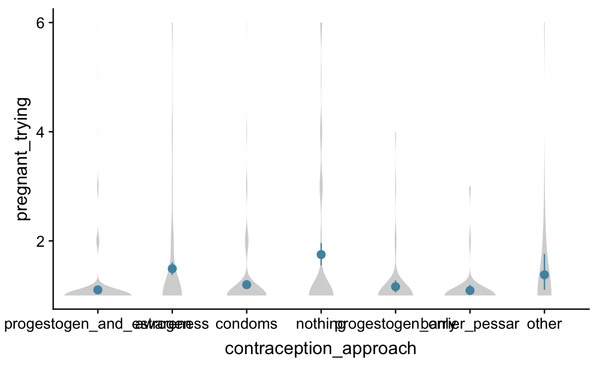

In our sex diary study, one of the most important components was our contraception questionnaire. Surprisingly, to us, we did not find a good, open standard questionnaire that fit our needs.1 We needed something that would measure
- not only one main, but all methods of contraception
- fertility awareness2 independently of whether it was used for contraceptive purposes, i.e. including apps like Clue
- the reasons why people mix contraceptive methods
- the exact contraceptive pill, intra-uterine device, ring, patch etc.3
- what fertility-awareness method users do when fertile
- all potential contraceptive methods that we could imagine
Why do we need such detailed information on contraception to study ovulatory effects?
- Combined hormonal contraceptives suppress ovulation—we could use them as a quasi-control group for our last study. However, progestogen-only contraceptives do not reliably suppress ovulation.
- Some fertility awareness method users are sexually abstinent in the fertile window. When we are interested in whether ovulation whets the appetite for sex and changes sexual behaviour, we should probably exclude these women or at least treat them separately.
- Awareness of the cycle phase could lead to different responses. Potentially, women actually feel or report feeling more desirable, or more sexual when they believe they are fertile—independently of, or on top of any hormonally caused changes.4
Today, I want to show the questions we chose and share the questionnaire. We’re still in the market for improvements. At the same time, I want to encourage others to more fully report contraception information in their menstrual cycle studies. When you are reporting effects on sexual desire or activity, we need to know more than that participants were not on the pill and not pregnant. I’ll try to show why in the coming blog posts.
Contraception or not?
We began by asking whether women used contraception at all. This time, we only asked women who were not pregnant. Next time, we plan to ask all women about contraception because even pregnant women could e.g. use condoms to prevent sexually transmitted infections, urinary tract infections. However, so that it does not like a lack of forethought, we should probably optionally display some explanation to this effect for e.g. menopausal and pregnant women, because some women found it odd to be asked these questions. In this study, we gave women a free text field to write in if they wanted to specify other reasons why they didn’t use contraception.

Figure 1: Pregnant women were excluded from the contraception questionnaire.
Figure 2: Different degrees of using contraception
Methods
Next, we asked all women who used contraception which methods they used. Multiple methods could be checked. As you can see, condoms and the the pill were the two most common methods. A lot of women also combined both. Next, you might be surprised at the number of women who report using coitus interruptus (in the lower left graph), the pull-out method. However, more women combined this with condoms or a fertility awareness method than used only coitus interruptus. Next were intra-uterine devices and hormonal contraceptives other than the pill. We will look at these in detail next.
Figure 3: Methods of contraception and how they are combined. In this UpSet plot, we see how common each contraceptive is (on its own or in combination with others) in the small bar chart in the lower left. We see which combinations are common by checking which circles are connected in the panel at the bottom and checking the height of the intersection bar.
As you can see, the non-pill hormonal methods were mainly NuvaRing (a estrogen/progestogen vaginal ring) and Mirena (a progestogen-only intra-uterine contraceptive).

Figure 4: Other hormonal contraceptives
Combining methods
Above, we saw that many women combine multiple contraceptives. We had a list of reasons that we considered likely, but many women also gave reasons we hadn’t included.

Figure 5: Why combine several contraceptives?
The most common reason was as a fallback method during fertile days (i.e., for women using fertility awareness methods). Many used condoms in addition to the pill to also prevent STDs, but many also used the pill and condoms to decrease conception risk even further. Fallback methods were also common (e.g. condoms as a fallback to the pill, or pull-out as a fallback to condoms). A substantial number of women also used different methods for different partners, and a small minority also said they used condoms when their partner has a cold.
From the reasons we hadn’t included in our list, we should include at least the following in the future:6
- fallback in case the pill might not have worked (e.g., stomach flu, throwing up, travel, medication)
- pill against acne/hypermenorrhoe/menstrual pain/other reasons, another method for contraception
- condoms for hygienic reasons
- condoms to avoid urinary tract infections
- according to mood
Fertility awareness
A special case of combining contraceptive methods are the fertility awareness methods. How many of our participants are sexually abstinent during the fertile phase, how many switch to other methods? As you can see, most switch to other methods. Total sexual abstinence is rare, although quite a few report having penetrative sex less often, or not at all.

Figure 6: What do fertility awareness method users do during their fertile phase?
Methods and reasons for combining methods in two big graphs
We can of course also merge the reasons for combining contraceptives with the contraceptive information itself.

Figure 7: Which contraceptives are combined for which reasons?
Figure 8: Which contraceptive method do fertility awareness method users switch to during their fertile phase?
The pill
To help our participants identify their pill, we used a searchable drop-down that showed the brand name of the pill together with a picture of the packaging. Most women found their pill in our list; the others were asked to enter name and details (progestogen type and amount, estrogen amount) into text fields.
Figure 9: Common oral contraceptive pills. Only those used by at least 10 women shown.
Figure 10: Micrograms of estrogen in a pill (unified to average content over 21 days, without pill break)
Awareness
Quite a few women used some sort of cycle app.
Figure 11: Cycle app users
Figure 12: Cycle apps. Only those used by at least 10 women shown.
We looked at all of these apps and coded their purpose. Some of them are just pill reminders, some additionally allow you to track symptoms, whereas others really lead to fertility awareness (i.e., tell you when they estimate you will be fertile).

We are really glad we asked about apps. As you can see below, the vast majority of cycle awareness app users do not use them as a primary method of contraception; most use condoms and IUDs.

Figure 13: Cycle awareness app users’ contraceptive methods.
Estrogen and progestogen
As you could see above, our participants used a wide variety of contraceptives. Among them were quite a few progestogen-only contraceptives (hormonal IUDs, such as Mirena, patches and depots, and of course various mini-pills, such as Jaydess, Cyprella, Desirett, Cerazette, etc.). When we add all this together, we see that a substantial minority uses progestogen-only contraceptives.

Summary
![To summarise all this for our purposes, we constructed the above categories. In A, we do not yet include information on cycle tracking apps and on the different hormones in contraceptives. In B, we account for this but lump women who combine hormones and barrier methods with other hormonal contraception users. To do so, we differentiate two hormonal methods, awareness methods, condoms, non-hormonal IUDs, and no contraception. The rest are lumped. For women who combine several contraceptives, the order in the preceding sentence determines precedence.](measuring-contraception_files/figure-html5/unnamed-chunk-17-1.png)
Figure 14: To summarise all this for our purposes, we constructed the above categories. In A, we do not yet include information on cycle tracking apps and on the different hormones in contraceptives. In B, we account for this but lump women who combine hormones and barrier methods with other hormonal contraception users. To do so, we differentiate two hormonal methods, awareness methods, condoms, non-hormonal IUDs, and no contraception. The rest are lumped. For women who combine several contraceptives, the order in the preceding sentence determines precedence.

So, these were the main questions from our questionnaire. I didn’t get into how we combined this with questions about the period (menarche/menopause, regularity, cycle length, etc.), family planning, and so on.
I added the entire list of questions, including skipping logic (which takes some forethought) below. You can export these to Excel and use them directly in formr.org. This is already an adapted version of the questionnaire we used and I’m sure it can be improved further. What questions are you asking? What can we improve in our next study?
Our questions
Acknowledgements
Thanks to Tessa Cappelle and Kim Gloystein for help translating the questionnaire. Thanks to Julie Driebe and Iro Eleftheriadou who helped me clean and code the contraception questionnaire data. The questionnaire was designed by our study team (Julie Driebe, Tanja M. Gerlach, Lars Penke, Julia Jünger (now: Julia Stern), Julia Ostner).
We checked a few familiar demographic surveys, which erred on the side of asking fewer questions, and the psychological literature, which erred on the side of not reporting exactly which questions were asked↩
Counting days, measuring temperature, mucus↩
so we could differentiate between contraceptives with different kinds and amounts of progestogens and different amounts of estrogens↩
In our last study, we only found some descriptive differences between non-hormonal methods. The only significant difference was between hormonal and non-hormonal methods, but our sample size for fertility awareness methods was small and potentially women who used condoms also used a fertility tracking app for fun, but not contraception. Descriptively, fertile window increases in extra-pair desire were larger for women using awareness methods than for barrier method (condoms, mostly) users, but the opposite pattern held for in-pair desire, and we found no apparent difference for self-perceived desirability.↩
If you ever find yourself in the situation of wanting to re-label items in your language with English labels, you can follow along the code for this post on Github. It’s really simple as long as you have a well-structured item sheet.↩
Taken from the written responses to the other reasons prompt.↩